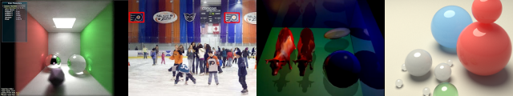

CIS 565: GPU Programming and Architecture
Fall 2012
University of Pennsylvania
Computer Graphics @ Penn


Course Overview | Schedule | Student Work | Previous semester
CIS 565: GPU Programming and ArchitectureFall 2012
University of Pennsylvania |
|
|
Course Overview | Schedule | Student Work | Previous semester |
Project 1: CUDA Raytracer
Project 2: CUDA Pathtracer
|